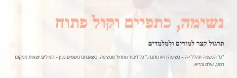

🎙️
קול המורה
מחקרים ותרגילים לשמירה על הקול: נשימה, דיבור מהבטן, היגיינה קולית ותרגילי קול יומיים
12 פריטים
קול המורה – מחקרים ותרגילים (12)

תרגילי קול יומיים - יהודה
זכור: העקביות היא המפתח! 5 דקות כל בוקר = קול בריא לשנים

נשימה, כתפיים וקול פתוח (מצגת)
30 תרגילים לשמירה על קולך (מצגת)

מחקר קול המורה: אמונה, נשימה, השפעה
שיתוף חלק ב - מודל הוליסטי לפיתוח קול סמכותי, בריא ומהדהד למורות ומורים שיתוף חלק א: מדריך רב־תחומי לשמירה על …

50% מהמורים עם בעיות קול – הפיזיולוגיה, הנפש והכוח הנסתר של הקול
(מודל ו.ק.א.ל.) - גימני

טכניקת קול – נשימה סרעפתית או היגיינה קולית?
טכניקת_קול__האם_נשימה_סרעפתית_או_היגיינה_ישירה_היא_המפתח_לקול_ב - נוטבוק

להפסיק לצרוד – המדריך המעשי לשמירה על הקול
להפסיק_לצרוד__המדריך_המעשי_לשמירה_על_הקול_–_מיתוס_הסרעפת,_הידרצ - נוטבוק

דיבור מתוך הבטן ושמירת קול המורה – מחקר עומק רב-תחומי - חלק 1 - GPT

דיבור מתוך הבטן ושמירת קול המורה – מחקר עומק רב-תחומי - חלק 2 - GPT

דיבור מתוך הבטן ושמירת קול המורה – מחקר עומק רב-תחומי - חלק 3 - GPT

דיבור מתוך הבטן ושמירת קול המורה – מחקר עומק רב-תחומי - חלק 4 - GPT